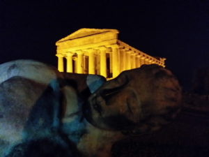

20
OTT 2020
20
OTT 2020
di Mario ||
postato in: SITI UNESCO SICILIA ||
0
La valle dei templi Agrigento, rappresenta la massima rappresentazione artistica nella realizzazione di templi dorici del periodo Ellenico, sono situati in una vasta area della Sicilia occidentale.
Una delle più vaste aree archeologiche della Sicilia si trova ad Agrigento, l’antica valle è seminata da dieci templi di origine greca in ordine dorico, una grande concentrazione di necropoli, fortificazioni e parte di un quartiere ellenistico romano costruito su pianta greca con due importanti luoghi di riunione l’Agorà inferiore, l’Agorà superiore.
Il tempio della Concordia appartiene all’antica città greca di Akragas posta nella Valle dei Templi di Agrigento, è quello meglio conservato, probabilmente perché trasformato in tempio cristiano nel VI secolo d.C.
Il tempio di Hera Lacinia, o anche tempio di Giunone, ha quasi le stesse dimensioni del tempio della Concordia spicca per la sua posizione panoramica, edificato intorno al 450 a.C. appartiene allo stile dorico classico.
Il Tempio di Eracle, o tempio di Ercole, era destinato al culto, molto importante nell’antica Akragas, è la costruzione più antica dell’area, fu distrutto da un terremoto. Tempio di Zeus Olimpio, edificato dopo la vittoria di Himera sui Cartaginesi (480-479), era caratterizzato dalla presenza dei telamoni, gigantesche statue di bronzo alte sette metri e mezzo, raffigurazione di Atlante che sorregge la volta celeste, una di queste si trova ancora nel sito. Il Tempio dei Dioscuri o tempio di Castore e Polluce, sorge all’interno del santuario delle divinità ctonie.
La valle dei Templi di Agrigento è sede di un importante sagra, quella del Mandorlo in Fiore. Nel mese di febbraio viene organizzata una festa come da tradizione, per una settimana si alternano spettacoli con gruppi folkloristici di diverse nazionalità che si esibiscono nello scenario naturale della valle dei templi.